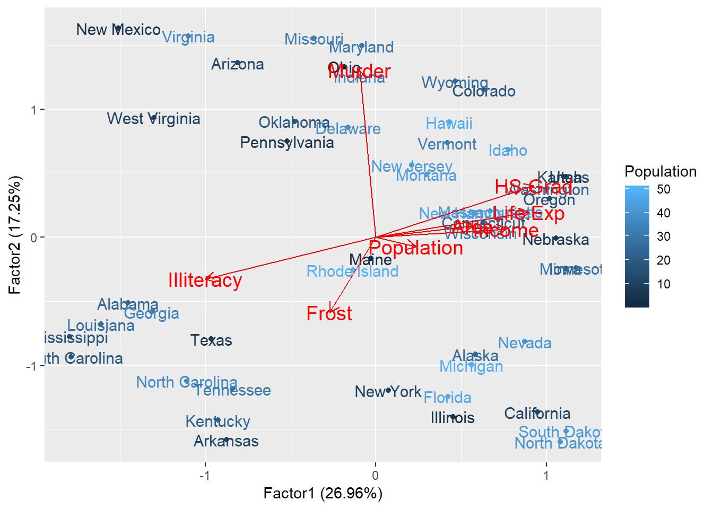

Chapter 18 Linear Model Anylysis
require(leaps)## Loading required package: leapsmodel <- glm(Population ~ ., data = st)
summary(model)##
## Call:
## glm(formula = Population ~ ., data = st)
##
## Deviance Residuals:
## Min 1Q Median 3Q Max
## -33.590 -10.464 -0.898 9.394 24.704
##
## Coefficients:
## Estimate Std. Error t value Pr(>|t|)
## (Intercept) 31.25909 13.67566 2.286 0.0274 *
## Income 0.25188 0.17693 1.424 0.1619
## Illiteracy -0.35679 0.53704 -0.664 0.5101
## Life.Exp -0.05938 0.20482 -0.290 0.7733
## Murder -0.11650 0.19357 -0.602 0.5505
## HS.Grad -0.26423 0.21955 -1.203 0.2355
## Frost -0.17490 0.19371 -0.903 0.3717
## Area 0.17760 0.16153 1.099 0.2778
## ---
## Signif. codes: 0 '***' 0.001 '**' 0.01 '*' 0.05 '.' 0.1 ' ' 1
##
## (Dispersion parameter for gaussian family taken to be 213.4415)
##
## Null deviance: 10412.5 on 49 degrees of freedom
## Residual deviance: 8964.5 on 42 degrees of freedom
## AIC: 419.34
##
## Number of Fisher Scoring iterations: 2library(ggfortify)
d.factanal <- factanal(st, factors = 2, scores = 'regression')
autoplot(d.factanal, data = st, colour = 'Population', label = TRUE, label.size = 4,
loadings = TRUE, loadings.label = TRUE, loadings.label.size = 5)
Both Murder and Income have significant effection on Population. The factanal figure is very similar as PCA figure except we add the Population lable on it. California has really high population and isolated from the other states. New York has high population too. But from the factanal figure we find that Nevada was isolated from the other states. It’s different from the PCA figure we got in PCA analysis.
model <- glm(Income ~ ., data = st)
summary(model)##
## Call:
## glm(formula = Income ~ ., data = st)
##
## Deviance Residuals:
## Min 1Q Median 3Q Max
## -20.1862 -7.1232 -0.2516 6.2072 26.0363
##
## Coefficients:
## Estimate Std. Error t value Pr(>|t|)
## (Intercept) 25.175015 11.725659 2.147 0.0376 *
## Population 0.182762 0.128376 1.424 0.1619
## Illiteracy -0.458973 0.454363 -1.010 0.3182
## Life.Exp -0.006649 0.174643 -0.038 0.9698
## Murder -0.232442 0.161660 -1.438 0.1579
## HS.Grad 0.462905 0.176289 2.626 0.0120 *
## Frost -0.211414 0.163370 -1.294 0.2027
## Area -0.076436 0.139062 -0.550 0.5855
## ---
## Signif. codes: 0 '***' 0.001 '**' 0.01 '*' 0.05 '.' 0.1 ' ' 1
##
## (Dispersion parameter for gaussian family taken to be 154.8687)
##
## Null deviance: 10412.5 on 49 degrees of freedom
## Residual deviance: 6504.5 on 42 degrees of freedom
## AIC: 403.31
##
## Number of Fisher Scoring iterations: 2d.factanal <- factanal(st, factors = 2, scores = 'regression')
autoplot(d.factanal, data = st, colour = 'Income', label = TRUE, label.size = 4,
loadings = TRUE, loadings.label = TRUE, loadings.label.size = 5)
Income has significant relationship with Population and High School Gradulation. We add the Income lable for this factanal figure . Maybe one of the reason for Alaska’s speciality is its high income.
model <- glm(Illiteracy ~ ., data = st)
summary(model)##
## Call:
## glm(formula = Illiteracy ~ ., data = st)
##
## Deviance Residuals:
## Min 1Q Median 3Q Max
## -6.9257 -2.5776 -0.3218 1.9303 13.5463
##
## Coefficients:
## Estimate Std. Error t value Pr(>|t|)
## (Intercept) 18.15925 3.05426 5.946 4.76e-07 ***
## Population -0.02915 0.04387 -0.664 0.5101
## Income -0.05168 0.05116 -1.010 0.3182
## Life.Exp -0.10616 0.05627 -1.887 0.0661 .
## Murder -0.04109 0.05520 -0.744 0.4608
## HS.Grad -0.14394 0.05984 -2.406 0.0206 *
## Frost -0.01831 0.05583 -0.328 0.7446
## Area -0.06104 0.04587 -1.331 0.1905
## ---
## Signif. codes: 0 '***' 0.001 '**' 0.01 '*' 0.05 '.' 0.1 ' ' 1
##
## (Dispersion parameter for gaussian family taken to be 17.43749)
##
## Null deviance: 1491.62 on 49 degrees of freedom
## Residual deviance: 732.37 on 42 degrees of freedom
## AIC: 294.11
##
## Number of Fisher Scoring iterations: 2Illiteracy is mainly correlated with Frost , HS. Grad and Area of the state.
model <- glm(Life.Exp ~ ., data = st)
summary(model)##
## Call:
## glm(formula = Life.Exp ~ ., data = st)
##
## Deviance Residuals:
## Min 1Q Median 3Q Max
## -24.401 -5.733 -0.454 5.672 20.714
##
## Coefficients:
## Estimate Std. Error t value Pr(>|t|)
## (Intercept) 23.830951 10.275410 2.319 0.0253 *
## Population -0.033630 0.116011 -0.290 0.7733
## Income -0.005191 0.136328 -0.038 0.9698
## Illiteracy -0.736018 0.390089 -1.887 0.0661 .
## Murder -0.103225 0.145434 -0.710 0.4818
## HS.Grad 0.278856 0.162452 1.717 0.0934 .
## Frost -0.134100 0.145729 -0.920 0.3627
## Area 0.211439 0.118911 1.778 0.0826 .
## ---
## Signif. codes: 0 '***' 0.001 '**' 0.01 '*' 0.05 '.' 0.1 ' ' 1
##
## (Dispersion parameter for gaussian family taken to be 120.8915)
##
## Null deviance: 8918.6 on 49 degrees of freedom
## Residual deviance: 5077.4 on 42 degrees of freedom
## AIC: 390.92
##
## Number of Fisher Scoring iterations: 2Life Expectation is signifcantly related with Murder, and HS.Grad too. We can use follow formula to predict the Life Expectation: \(Life.Exp = 70.94 - 0.3011 * Murder + 0.0489 * HS.Grad\)
model <- glm(Murder ~ ., data = st)
summary(model)##
## Call:
## glm(formula = Murder ~ ., data = st)
##
## Deviance Residuals:
## Min 1Q Median 3Q Max
## -19.989 -6.959 -0.474 6.463 33.555
##
## Coefficients:
## Estimate Std. Error t value Pr(>|t|)
## (Intercept) 39.24072 9.78903 4.009 0.000245 ***
## Population -0.07340 0.12195 -0.602 0.550514
## Income -0.20183 0.14037 -1.438 0.157889
## Illiteracy -0.31688 0.42570 -0.744 0.460804
## Life.Exp -0.11482 0.16177 -0.710 0.481766
## HS.Grad 0.22509 0.17381 1.295 0.202368
## Frost -0.44382 0.13932 -3.186 0.002723 **
## Area -0.02066 0.13001 -0.159 0.874482
## ---
## Signif. codes: 0 '***' 0.001 '**' 0.01 '*' 0.05 '.' 0.1 ' ' 1
##
## (Dispersion parameter for gaussian family taken to be 134.4742)
##
## Null deviance: 7764.5 on 49 degrees of freedom
## Residual deviance: 5647.9 on 42 degrees of freedom
## AIC: 396.24
##
## Number of Fisher Scoring iterations: 2Murder is signifcantly related to Life.Exp and Population of the state. I we know the population and Life.Exp of the certain state in those years, we can predict Murder in that state at that time. \(Murder = 122.2 - 1.655 * Life.Exp + 0.000188 * Population\)
model <- glm(HS.Grad ~ ., data = st)
summary(model)##
## Call:
## glm(formula = HS.Grad ~ ., data = st)
##
## Deviance Residuals:
## Min 1Q Median 3Q Max
## -15.6772 -6.3948 -0.7912 6.4416 23.1144
##
## Coefficients:
## Estimate Std. Error t value Pr(>|t|)
## (Intercept) 15.870646 9.716734 1.633 0.1099
## Population -0.126166 0.104833 -1.203 0.2355
## Income 0.304633 0.116014 2.626 0.0120 *
## Illiteracy -0.841319 0.349725 -2.406 0.0206 *
## Life.Exp 0.235089 0.136955 1.717 0.0934 .
## Murder 0.170598 0.131728 1.295 0.2024
## Frost 0.005356 0.135144 0.040 0.9686
## Area -0.011616 0.113202 -0.103 0.9188
## ---
## Signif. codes: 0 '***' 0.001 '**' 0.01 '*' 0.05 '.' 0.1 ' ' 1
##
## (Dispersion parameter for gaussian family taken to be 101.9174)
##
## Null deviance: 9198.0 on 49 degrees of freedom
## Residual deviance: 4280.5 on 42 degrees of freedom
## AIC: 382.38
##
## Number of Fisher Scoring iterations: 2require(leaps)
model <- regsubsets(HS.Grad ~ ., data = st, method = "exhaustive")
summary(model)## Subset selection object
## Call: regsubsets.formula(HS.Grad ~ ., data = st, method = "exhaustive")
## 7 Variables (and intercept)
## Forced in Forced out
## Population FALSE FALSE
## Income FALSE FALSE
## Illiteracy FALSE FALSE
## Life.Exp FALSE FALSE
## Murder FALSE FALSE
## Frost FALSE FALSE
## Area FALSE FALSE
## 1 subsets of each size up to 7
## Selection Algorithm: exhaustive
## Population Income Illiteracy Life.Exp Murder Frost Area
## 1 ( 1 ) " " " " "*" " " " " " " " "
## 2 ( 1 ) " " "*" "*" " " " " " " " "
## 3 ( 1 ) " " "*" "*" "*" " " " " " "
## 4 ( 1 ) " " "*" "*" "*" "*" " " " "
## 5 ( 1 ) "*" "*" "*" "*" "*" " " " "
## 6 ( 1 ) "*" "*" "*" "*" "*" " " "*"
## 7 ( 1 ) "*" "*" "*" "*" "*" "*" "*"model <- regsubsets(HS.Grad ~ ., data = st, method = "forward")
summary(model)## Subset selection object
## Call: regsubsets.formula(HS.Grad ~ ., data = st, method = "forward")
## 7 Variables (and intercept)
## Forced in Forced out
## Population FALSE FALSE
## Income FALSE FALSE
## Illiteracy FALSE FALSE
## Life.Exp FALSE FALSE
## Murder FALSE FALSE
## Frost FALSE FALSE
## Area FALSE FALSE
## 1 subsets of each size up to 7
## Selection Algorithm: forward
## Population Income Illiteracy Life.Exp Murder Frost Area
## 1 ( 1 ) " " " " "*" " " " " " " " "
## 2 ( 1 ) " " "*" "*" " " " " " " " "
## 3 ( 1 ) " " "*" "*" "*" " " " " " "
## 4 ( 1 ) " " "*" "*" "*" "*" " " " "
## 5 ( 1 ) "*" "*" "*" "*" "*" " " " "
## 6 ( 1 ) "*" "*" "*" "*" "*" " " "*"
## 7 ( 1 ) "*" "*" "*" "*" "*" "*" "*"model <- glm(HS.Grad ~ Illiteracy + Area + Life.Exp + Income, data = st)
summary(model)##
## Call:
## glm(formula = HS.Grad ~ Illiteracy + Area + Life.Exp + Income,
## data = st)
##
## Deviance Residuals:
## Min 1Q Median 3Q Max
## -20.624 -6.517 -2.793 7.318 22.786
##
## Coefficients:
## Estimate Std. Error t value Pr(>|t|)
## (Intercept) 18.77743 6.63039 2.832 0.00689 **
## Illiteracy -0.93005 0.34563 -2.691 0.00997 **
## Area -0.04374 0.11237 -0.389 0.69894
## Life.Exp 0.24900 0.13637 1.826 0.07449 .
## Income 0.26114 0.11182 2.335 0.02405 *
## ---
## Signif. codes: 0 '***' 0.001 '**' 0.01 '*' 0.05 '.' 0.1 ' ' 1
##
## (Dispersion parameter for gaussian family taken to be 103.8066)
##
## Null deviance: 9198.0 on 49 degrees of freedom
## Residual deviance: 4671.3 on 45 degrees of freedom
## AIC: 380.75
##
## Number of Fisher Scoring iterations: 2we can predict HS.Grad mainly using four factors: Illiteracy, Area, Life.Exp and Income, though both globle search method “exhaustive” and “foreward” included every factors of the data set into it. We get the final formula as: \(HS.Grad = -5.383 * Illiteracy + 0.00002983 * Area + 1.806 * Life.Exp + 0.002968 * Income\)